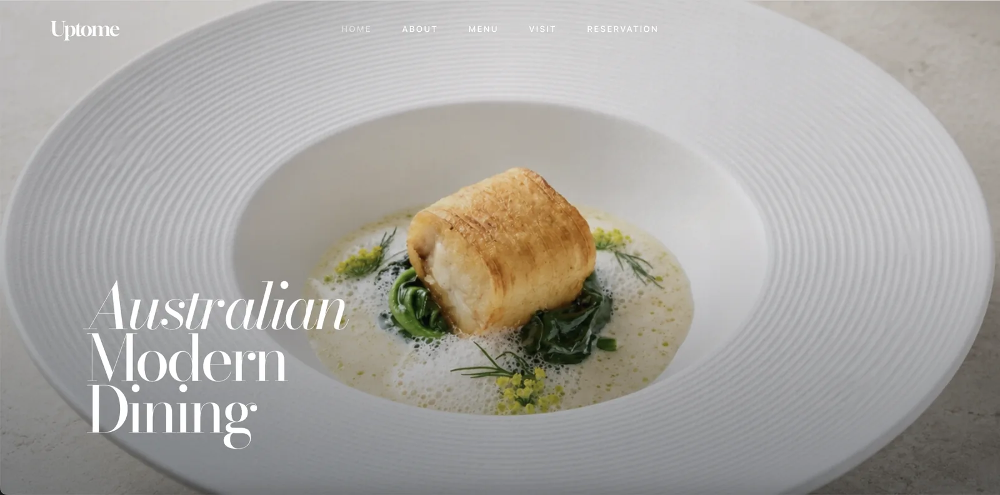
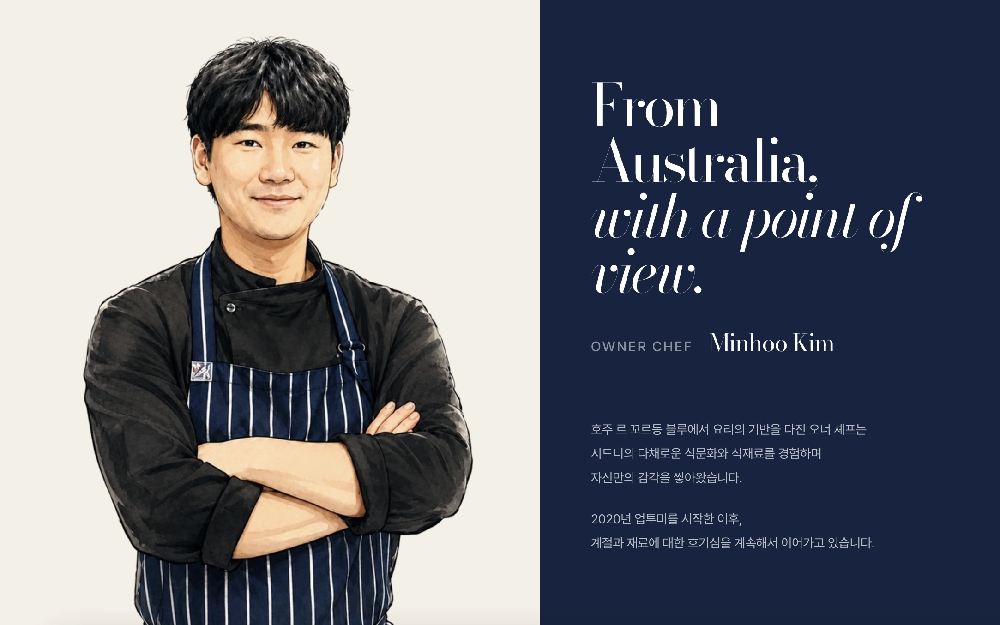
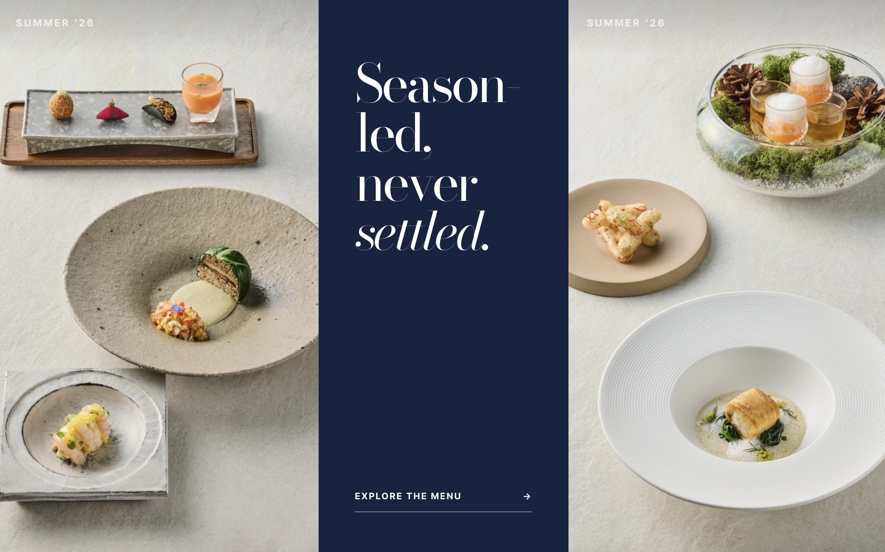
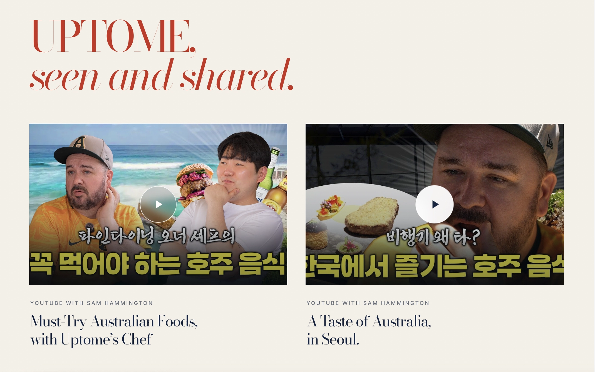
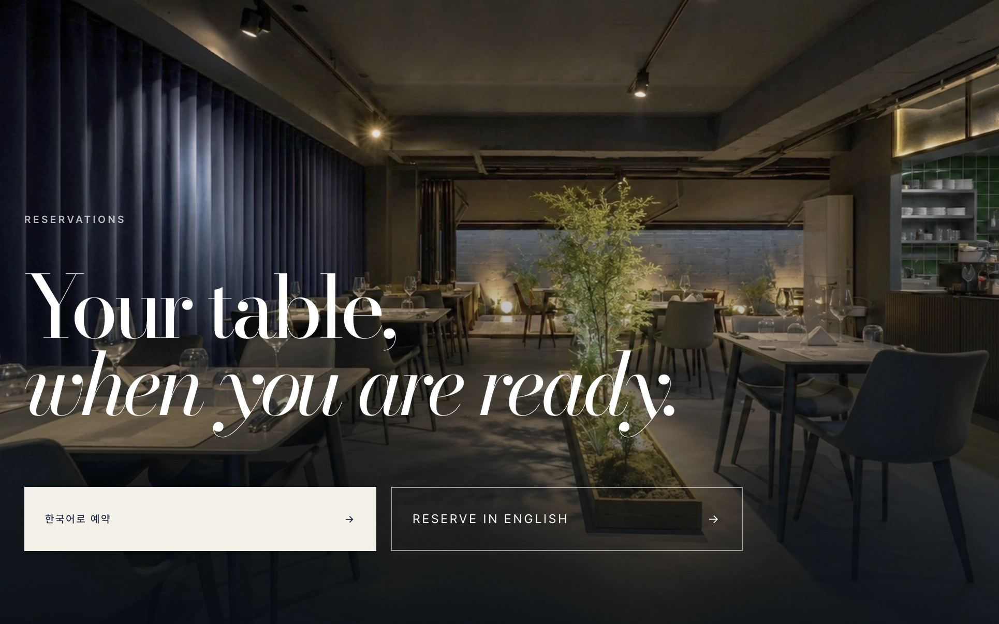

01 / 05
01
F&B · 브랜드 웹사이트 · 5페이지
Uptome
호주식 모던 다이닝의 자유로운 분위기와 제철 메뉴의 변화를 담아, 브랜드 소개부터 메뉴·방문·예약까지 자연스럽게 이어지는 5페이지 웹사이트를 기획하고 제작했습니다. 브랜드의 컬러를 보여줄 수 있는 네이비, 레드 컬러를 포인트로 사용했으며 커스텀 일러스트를 넣어 캐주얼한 분위기를 연출했습니다.
디자인 기획UX/UI웹 개발반응형 웹검색 최적화예약 및 지도 연결
프로젝트 보기